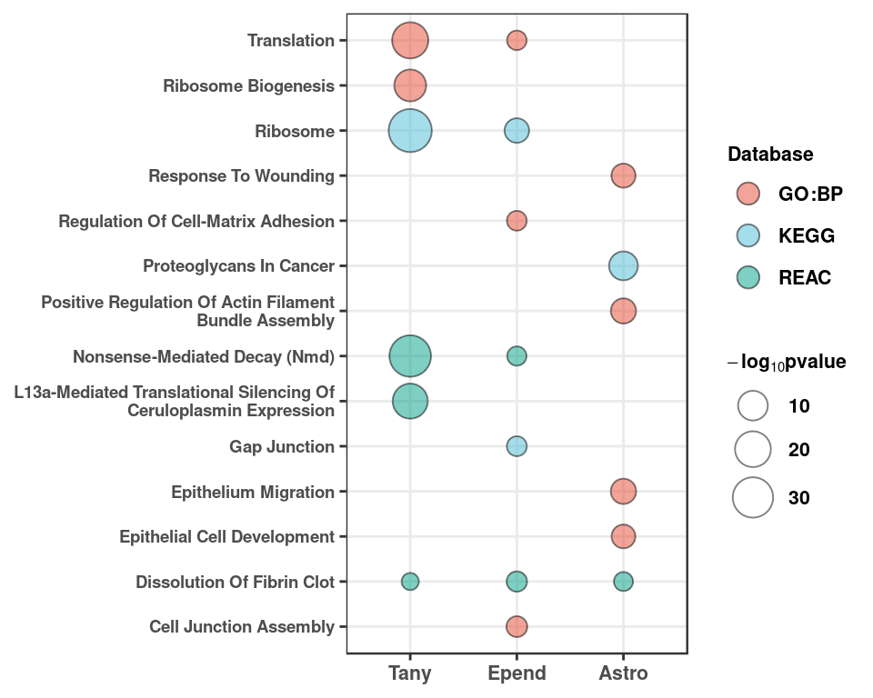

Glial DGE
Last updated: 2019-12-03
Checks: 6 1
Knit directory: bentsen-rausch-2019/
This reproducible R Markdown analysis was created with workflowr (version 1.4.0). The Checks tab describes the reproducibility checks that were applied when the results were created. The Past versions tab lists the development history.
Great! Since the R Markdown file has been committed to the Git repository, you know the exact version of the code that produced these results.
The global environment had objects present when the code in the R Markdown file was run. These objects can affect the analysis in your R Markdown file in unknown ways. For reproduciblity it’s best to always run the code in an empty environment. Use wflow_publish or wflow_build to ensure that the code is always run in an empty environment.
The following objects were defined in the global environment when these results were created:
| Name | Class | Size |
|---|---|---|
| data | environment | 56 bytes |
| env | environment | 56 bytes |
The command set.seed(20191021) was run prior to running the code in the R Markdown file. Setting a seed ensures that any results that rely on randomness, e.g. subsampling or permutations, are reproducible.
Great job! Recording the operating system, R version, and package versions is critical for reproducibility.
Nice! There were no cached chunks for this analysis, so you can be confident that you successfully produced the results during this run.
Great job! Using relative paths to the files within your workflowr project makes it easier to run your code on other machines.
Great! You are using Git for version control. Tracking code development and connecting the code version to the results is critical for reproducibility. The version displayed above was the version of the Git repository at the time these results were generated.
Note that you need to be careful to ensure that all relevant files for the analysis have been committed to Git prior to generating the results (you can use wflow_publish or wflow_git_commit). workflowr only checks the R Markdown file, but you know if there are other scripts or data files that it depends on. Below is the status of the Git repository when the results were generated:
Ignored files:
Ignored: .Rproj.user/
Ignored: test_files/
Untracked files:
Untracked: analysis/figure_6.Rmd
Untracked: analysis/figure_7.Rmd
Untracked: analysis/supp1.Rmd
Untracked: code/sc_functions.R
Untracked: data/bulk/
Untracked: data/fgf_filtered_nuclei.RDS
Untracked: data/figures/
Untracked: data/filtglia.RDS
Untracked: data/glia/
Untracked: data/lps1.txt
Untracked: data/mcao1.txt
Untracked: data/mcao_d3.txt
Untracked: data/mcaod7.txt
Untracked: data/mouse_data/
Untracked: data/neur_astro_induce.xlsx
Untracked: data/neuron/
Untracked: data/synaptic_activity_induced.xlsx
Untracked: output/agrp_pcgenes.csv
Untracked: output/all_wc_markers.csv
Untracked: output/allglia_wgcna_genemodules.csv
Untracked: output/bulk/
Untracked: output/fig.RData
Untracked: output/fig4_part2.RData
Untracked: output/glia/
Untracked: output/glial_markergenes.csv
Untracked: output/integrated_all_markergenes.csv
Untracked: output/integrated_neuronmarkers.csv
Untracked: output/neuron/
Unstaged changes:
Modified: analysis/10_wc_pseudobulk.Rmd
Modified: analysis/11_wc_astro_wgcna.Rmd
Modified: analysis/13_olig_pseudotime.Rmd
Modified: analysis/15_tany_wgcna_pseudo.Rmd
Modified: analysis/9_wc_processing.Rmd
Modified: analysis/figure_1.Rmd
Modified: analysis/index.Rmd
Note that any generated files, e.g. HTML, png, CSS, etc., are not included in this status report because it is ok for generated content to have uncommitted changes.
These are the previous versions of the R Markdown and HTML files. If you’ve configured a remote Git repository (see ?wflow_git_remote), click on the hyperlinks in the table below to view them.
| File | Version | Author | Date | Message |
|---|---|---|---|---|
| Rmd | f28adb7 | Full Name | 2019-12-03 | wflow_publish(c(“analysis/6_glial_dge.Rmd”)) |
| html | f4dd96b | Full Name | 2019-10-29 | Build site. |
| html | 9cf1e45 | Full Name | 2019-10-28 | Build site. |
Load Libraries
library(Seurat)
library(DESeq2)
library(future.apply)
library(cowplot)
library(tidyverse)
library(ggrepel)
library(reshape2)
library(ggpubr)
library(here)
library(wesanderson)
library(ggupset)
library(ggcorrplot)
library(gProfileR)
plan(multiprocess, workers=40)
options(future.globals.maxSize = 4000 * 1024^2)Generate Glial Plots
fgf.glia.sub<-readRDS(here("data/glia/glia_seur_filtered.RDS"))
fgf.glia.sub <- RenameIdents(fgf.glia.sub, "COP" = "OPC_COP")
fgf.glia.sub$group<-paste0(fgf.glia.sub$trt, "_", fgf.glia.sub$day)
data.frame(Embeddings(fgf.glia.sub, reduction = "umap")) %>%
mutate(group = fgf.glia.sub$group) %>%
mutate(celltype = Idents(fgf.glia.sub)) %>%
.[sample(nrow(.)),] %>%
mutate(group = replace(group, group == "FGF_Day-5", "FGF_d5")) %>%
mutate(group = replace(group, group == "FGF_Day-1", "FGF_d1")) %>%
mutate(group = replace(group, group == "PF_Day-1", "Veh_d1")) %>%
mutate(group = replace(group, group == "PF_Day-5", "Veh_d5")) -> umap_embed
colnames(umap_embed)[1:2] <- c("UMAP1", "UMAP2")
label.df <- data.frame(cluster=levels(umap_embed$celltype),label=levels(umap_embed$celltype))
label.df_2 <- umap_embed %>%
dplyr::group_by(celltype) %>%
dplyr::summarize(x = median(UMAP1), y = median(UMAP2))
p1<-ggplot(umap_embed, aes(x=UMAP1, y=UMAP2, colour=celltype)) +
geom_point(alpha=0.5, size=2) +
geom_text_repel(data = label.df_2, aes(label = celltype, x=x, y=y),
size=3, fontface="bold", inherit.aes = F, bg.colour="white") +
theme_pubr(legend="none") + ggsci::scale_color_igv() + theme_figure
p1# Integration across timepoints and treatment
p2<-ggplot(umap_embed, aes(x=UMAP1, y=UMAP2, colour=group)) +
geom_point(alpha=.5, size=1) +
ggsci::scale_color_igv() +
theme_pubr(legend = "none") + theme_figure
p2Get colors for matching
g <- ggplot_build(p1)
cols<-data.frame(colours = as.character(unique(g$data[[1]]$colour)),
label = as.character(unique(g$plot$data[, g$plot$labels$colour])))
colvec<-as.character(cols$colours)
names(colvec)<-as.character(cols$label)Generate Pseudo Counts
fgf.glia.sub<-ScaleData(fgf.glia.sub, verbose=F)
split_mats<-splitbysamp(fgf.glia.sub, split_by="sample")
names(split_mats)<-unique(Idents(fgf.glia.sub))
pb<-replicate(100, gen_pseudo_counts(split_mats, ncells=10))
names(pb)<-paste0(rep(names(split_mats)),rep(1:100, each=length(names(split_mats))))Generate DESeq2 Objects
res<-rundeseq(pb)Identify most responsive cell types
degenes<-lapply(res, function(x) {
tryCatch({
y<-x[[2]]
y<-na.omit(y)
data.frame(y)%>%filter(padj<0.1)%>%nrow()},
error=function(err) {NA})
})
boxplot<-lapply(unique(Idents(fgf.glia.sub)), function(x) {
y<-paste0("^",x)
z<-unlist(degenes[grep(y, names(degenes))])
})
names(boxplot)<-unique(Idents(fgf.glia.sub))
genenum<-melt(boxplot)
colnames(genenum)<-c("number","CellType")
genenum <- write_csv(genenum, path = here("output/glia/glia_resampling_output.csv"))
deplot_re <- ggplot(genenum, aes(x=reorder(CellType, -number), y=number, fill=CellType)) +
geom_boxplot(notch = T, alpha=1) + scale_fill_manual(values = colvec) +
ylab("Number DEG") + xlab(NULL) + theme_pubr(legend="none") + theme_figure
deplot_reGenerate Pseudo Counts
split_mats<-lapply(unique(Idents(fgf.glia.sub)), function(x){
sub<-subset(fgf.glia.sub, idents=x)
DefaultAssay(sub)<-"SCT"
list_sub<-SplitObject(sub, split.by="sample")
return(list_sub)
})
names(split_mats)<-unique(Idents(fgf.glia.sub))
pseudo_counts<-lapply(split_mats, function(x){
lapply(x, function(y) {
DefaultAssay(y) <- "SCT"
mat<-GetAssayData(y, slot="counts")
counts <- Matrix::rowSums(mat)
}) %>% do.call(rbind, .) %>% t() %>% as.data.frame()
})
names(pseudo_counts)<-names(split_mats)Generate DESeq2 Objects
dds_list<-lapply(pseudo_counts, function(x){
tryCatch({
trt<-ifelse(grepl("FGF", colnames(x)), yes="F", no="P")
number<-sapply(strsplit(colnames(x),"_"),"[",1)
day<-ifelse(as.numeric(as.character(number))>10, yes="5", no="1")
meta<-data.frame(trt=trt, day=factor(day))
dds <- DESeqDataSetFromMatrix(countData = x,
colData = meta,
design = ~ 0 + trt)
dds$group<-factor(paste0(dds$trt, "_", dds$day))
design(dds) <- ~ 0 + group
keep <- rowSums(counts(dds) >= 5) > 5
dds <- dds[keep,]
dds<-DESeq(dds)
res_5<-results(dds, contrast = c("group","F_5","P_5"))
res_1<-results(dds, contrast = c("group","F_1","P_1"))
f_5_1<-results(dds, contrast = c("group","F_5","F_1"))
p_5_1<-results(dds, contrast = c("group","P_5","P_1"))
return(list(dds, res_1, res_5,f_5_1, p_5_1))
}, error=function(err) {print(err)})
})Volcano Plot of DE genes
volc_list<-lapply(dds_list, function(x) {
x[[2]] %>% na.omit() %>% data.frame() %>% add_rownames("gene") %>%
mutate(siglog=ifelse(padj<0.05&abs(log2FoldChange)>1, yes=T, no=F)) %>%
mutate(onlysig=ifelse(padj<0.05&abs(log2FoldChange)<1, yes=T, no=F)) %>%
mutate(onlylog=ifelse(padj>0.05&abs(log2FoldChange)>1, yes=T, no=F)) %>%
mutate(col=ifelse(siglog==T, yes="1", no =
ifelse(onlysig==T, yes="2", no =
ifelse(onlylog==T, yes="3", no="4")))) %>%
arrange(padj) %>% mutate(label=ifelse(min_rank(padj) < 15, gene, "")) %>%
dplyr::select(gene, log2FoldChange, padj, col, label)
})Warning: Deprecated, use tibble::rownames_to_column() instead.
Warning: Deprecated, use tibble::rownames_to_column() instead.
Warning: Deprecated, use tibble::rownames_to_column() instead.
Warning: Deprecated, use tibble::rownames_to_column() instead.
Warning: Deprecated, use tibble::rownames_to_column() instead.
Warning: Deprecated, use tibble::rownames_to_column() instead.
Warning: Deprecated, use tibble::rownames_to_column() instead.
Warning: Deprecated, use tibble::rownames_to_column() instead.mapply(x = volc_list, y = names(volc_list), function(x, y) {
write_csv(x, path = here(sprintf("output/glia/nuclei/d1_%s_pseudobulk_dge.csv",y)))
}) Astro Olig Micro OPC_COP
gene Character,8681 Character,9346 Character,6068 Character,2820
log2FoldChange Numeric,8681 Numeric,9346 Numeric,6068 Numeric,2820
padj Numeric,8681 Numeric,9346 Numeric,6068 Numeric,2820
col Character,8681 Character,9346 Character,6068 Character,2820
label Character,8681 Character,9346 Character,6068 Character,2820
Tany VLMC Endo Epend
gene Character,3731 Character,732 Character,956 Character,1478
log2FoldChange Numeric,3731 Numeric,732 Numeric,956 Numeric,1478
padj Numeric,3731 Numeric,732 Numeric,956 Numeric,1478
col Character,3731 Character,732 Character,956 Character,1478
label Character,3731 Character,732 Character,956 Character,1478plotlist<-mapply(x=volc_list, y=names(volc_list), function(x,y){
ggplot(x, aes(y=(-log10(padj)), x=log2FoldChange, colour=factor(col), label=label)) +
xlab(expression(Log[2]*~Fold*~Change)) + ylab(expression(-Log[10]*~pvalue)) +
geom_point(size=3, alpha=0.75) + geom_hline(yintercept = -log10(0.05), linetype="dashed") +
geom_vline(xintercept = c(-1,1), linetype="dashed") + geom_text_repel(colour="black") + theme_pubr() +
theme(legend.position = "none", title = element_text(vjust=0.5)) +
scale_colour_manual(values = wes_palette("Royal1", 3, type="discrete")[c(2,1,3)]) +
ggtitle(y)}, SIMPLIFY = FALSE)
plot_grid(plotlist = plotlist, ncol=3)
| Version | Author | Date |
|---|---|---|
| 9cf1e45 | Full Name | 2019-10-28 |
ggsave(here("data/figures/supp/allvolplots.pdf"))
devolc_plot <- plot_grid(plotlist=plotlist[c("Astro","Tany")], ncol=2)Go Term enrichment across cell-types
pos_genes <- lapply(dds_list[c("Tany","Astro","Epend")], function(x) {
x[[2]] %>% na.omit() %>% data.frame() %>% add_rownames("gene") %>%
filter(padj<0.05, log2FoldChange>1) %>% pull("gene")
})Warning: Deprecated, use tibble::rownames_to_column() instead.
Warning: Deprecated, use tibble::rownames_to_column() instead.
Warning: Deprecated, use tibble::rownames_to_column() instead.neg_genes <- lapply(dds_list[c("Tany","Astro","Epend")], function(x) {
x[[2]] %>% na.omit() %>% data.frame() %>% add_rownames("gene") %>%
filter(padj<0.05, log2FoldChange<(-1)) %>% pull("gene")
})Warning: Deprecated, use tibble::rownames_to_column() instead.
Warning: Deprecated, use tibble::rownames_to_column() instead.
Warning: Deprecated, use tibble::rownames_to_column() instead.pos_path <- lapply(pos_genes, function(x) {
gprofiler(x, organism = "mmusculus", significant = T,
src_filter = c("GO:BP","REAC", "KEGG"), hier_filtering = "strong",
min_isect_size = 3,
sort_by_structure = T,exclude_iea = T,
min_set_size = 10, max_set_size = 500,correction_method = "fdr") %>%
arrange(p.value)
})
neg_path <- lapply(neg_genes, function(x) {
gprofiler(x, organism = "mmusculus", significant = T,
src_filter = c("GO:BP","REAC", "KEGG"), hier_filtering = "strong",
min_isect_size = 3,
sort_by_structure = T,exclude_iea = T,
min_set_size = 10, max_set_size = 500,correction_method = "fdr") %>%
arrange(p.value)
})
pos_go <- bind_rows(pos_path, .id="id")
write_csv(pos_go, here("output/glia/nucd1_pos_go.csv"))
neg_go <- bind_rows(neg_path, .id="id")
write_csv(neg_go, here("output/glia/nucd1_neg_go.csv"))GO term plot of upregulated genes
pos_go %>% dplyr::group_by(id) %>% dplyr::slice(1:5) %>% dplyr::pull(term.id) -> go_id
pos_go %>% filter(term.id%in%go_id) %>%
ggplot(aes(x=fct_relevel(id,"Tany","Epend","Astro"), y=str_to_title(str_wrap(term.name, 40), locale = "en"))) +
geom_point(aes(size=(-log10(p.value)), fill=domain), shape=21, alpha=0.5) +
scale_size(name = expression(bold(-log[10]*pvalue)), range=c(3,8)) +
ggsci::scale_fill_npg(name = "Database", labels=c("GO:BP","KEGG","REAC")) +
xlab(NULL) + ylab(NULL) + theme_bw() + theme_figure +
theme(axis.text.y = element_text(size=7, face="bold")) +
guides(fill = guide_legend(override.aes = list(size=4), title.theme = element_text(face="bold", size=8),
label.theme = element_text(face="bold", size=8)),
size = guide_legend(title.theme = element_text(size=8),
label.theme = element_text(face="bold", size=8))) -> pos_go_plot
pos_go_plot
| Version | Author | Date |
|---|---|---|
| 9cf1e45 | Full Name | 2019-10-28 |
Go term plot of downregulated genes
neg_go %>% dplyr::group_by(id) %>% dplyr::slice(1:5) %>% ggplot(aes(x=fct_relevel(id,"Tany","Epend","Astro"), y=str_wrap(term.name, 30))) +
geom_point(aes(size=(-log10(p.value)), fill=domain), shape=21, alpha=0.75) +
scale_size(name = expression(log[10]*pvalue), range=c(3,10)) + ggsci::scale_fill_npg(name = "Database") + xlab(NULL) + ylab(NULL) +
theme_figure + guides(fill = guide_legend(override.aes = list(size=6))) -> neg_go_plot
neg_go_plotWarning: Unknown levels in `f`: Astro
Warning: Unknown levels in `f`: Astro
| Version | Author | Date |
|---|---|---|
| 9cf1e45 | Full Name | 2019-10-28 |
Overlap between cell-types
res_glia_1<-lapply(dds_list, function(x) {
data.frame(x[[2]]) %>% add_rownames("gene") %>% na.omit(x) %>%
filter(padj<0.05) %>% arrange(padj) %>% select(gene) -> x
})Warning: Deprecated, use tibble::rownames_to_column() instead.
Warning: Deprecated, use tibble::rownames_to_column() instead.
Warning: Deprecated, use tibble::rownames_to_column() instead.
Warning: Deprecated, use tibble::rownames_to_column() instead.
Warning: Deprecated, use tibble::rownames_to_column() instead.
Warning: Deprecated, use tibble::rownames_to_column() instead.
Warning: Deprecated, use tibble::rownames_to_column() instead.
Warning: Deprecated, use tibble::rownames_to_column() instead.resglia<-bind_rows(res_glia_1, .id="id")
resglia %>%
dplyr::group_by(gene) %>%
dplyr::summarize(Celltype = list(id)) -> resglia
upset <- ggplot(resglia, aes(x=Celltype)) +
geom_bar(fill=c(rep("black",3),"#E64B35B2","#E64B35B2","#E64B35B2", rep("black",4))) + theme_pubr() +
scale_x_upset(n_intersections = 10) + xlab(NULL) + ylab("Number DEG") + theme_figure
upsetWarning: Removed 13 rows containing non-finite values (stat_count).
| Version | Author | Date |
|---|---|---|
| 9cf1e45 | Full Name | 2019-10-28 |
Generate part of figure
top <- plot_grid(p1, deplot_re, labels=c("a","b"), scale=0.95, align="hv", axis="tb")
mid <- plot_grid(pos_go_plot, upset, axis="t", scale=0.95, align="hv", labels=c("c","d"), rel_widths = c(1,1))Warning: Removed 13 rows containing non-finite values (stat_count).fig3_top <- plot_grid(top, mid, ncol=1, align="hv", axis="tblr", rel_heights = c(1,1.1))
fig3_topggsave2(fig3_top, filename = here("data/figures/fig3/fig3_top.png"), h=7, w=12)
save(fig3_top, file = here("data/figures/fig3/fig3_top.RData"))Correlation (Supplementary figure)
library(ggcorrplot)
ranks<-lapply(dds_list, function(x) {
x<-data.frame(x[[2]])
x<-na.omit(x)
y <- (-log10(x$pvalue))*(x$log2FoldChange)
z <- rownames(x)
df<-data.frame(order=y,gene=z)
df<-df[order(-df$order),]
})
corframe<-Reduce(function(x, y) merge(x, y, all=T, by=c("gene")), ranks)Warning in merge.data.frame(x, y, all = T, by = c("gene")): column names
'order.x', 'order.y' are duplicated in the result
Warning in merge.data.frame(x, y, all = T, by = c("gene")): column names
'order.x', 'order.y' are duplicated in the resultWarning in merge.data.frame(x, y, all = T, by = c("gene")): column names
'order.x', 'order.y', 'order.x', 'order.y' are duplicated in the result
Warning in merge.data.frame(x, y, all = T, by = c("gene")): column names
'order.x', 'order.y', 'order.x', 'order.y' are duplicated in the resultWarning in merge.data.frame(x, y, all = T, by = c("gene")): column names
'order.x', 'order.y', 'order.x', 'order.y', 'order.x', 'order.y' are
duplicated in the resultcolnames(corframe)<-c("gene",names(ranks))
corframe<-corframe[,-1]
dim(corframe[complete.cases(corframe),])[1] 363 8plotcor <- cor(corframe, method = "spearman", use="complete.obs")
ggcorrplot(plotcor, hc.order = T, type="lower") +
ggsci::scale_fill_gsea(limit = c(0,1))
sessionInfo()R version 3.5.3 (2019-03-11)
Platform: x86_64-pc-linux-gnu (64-bit)
Running under: Storage
Matrix products: default
BLAS/LAPACK: /usr/lib64/libopenblas-r0.3.3.so
locale:
[1] LC_CTYPE=en_DK.UTF-8 LC_NUMERIC=C
[3] LC_TIME=en_DK.UTF-8 LC_COLLATE=en_DK.UTF-8
[5] LC_MONETARY=en_DK.UTF-8 LC_MESSAGES=en_DK.UTF-8
[7] LC_PAPER=en_DK.UTF-8 LC_NAME=C
[9] LC_ADDRESS=C LC_TELEPHONE=C
[11] LC_MEASUREMENT=en_DK.UTF-8 LC_IDENTIFICATION=C
attached base packages:
[1] parallel stats4 stats graphics grDevices utils datasets
[8] methods base
other attached packages:
[1] gProfileR_0.6.7 ggcorrplot_0.1.3
[3] ggupset_0.1.0.9000 wesanderson_0.3.6.9000
[5] here_0.1 ggpubr_0.2.1
[7] magrittr_1.5 reshape2_1.4.3
[9] ggrepel_0.8.0.9000 forcats_0.4.0
[11] stringr_1.4.0 dplyr_0.8.3
[13] purrr_0.3.2 readr_1.3.1.9000
[15] tidyr_0.8.3 tibble_2.1.3
[17] ggplot2_3.2.1 tidyverse_1.2.1
[19] cowplot_1.0.0 future.apply_1.3.0
[21] future_1.14.0 DESeq2_1.22.2
[23] SummarizedExperiment_1.12.0 DelayedArray_0.8.0
[25] BiocParallel_1.16.6 matrixStats_0.54.0
[27] Biobase_2.42.0 GenomicRanges_1.34.0
[29] GenomeInfoDb_1.18.2 IRanges_2.16.0
[31] S4Vectors_0.20.1 BiocGenerics_0.28.0
[33] Seurat_3.0.3.9036
loaded via a namespace (and not attached):
[1] reticulate_1.13 R.utils_2.9.0 tidyselect_0.2.5
[4] RSQLite_2.1.1 AnnotationDbi_1.44.0 htmlwidgets_1.3
[7] grid_3.5.3 Rtsne_0.15 munsell_0.5.0
[10] codetools_0.2-16 ica_1.0-2 withr_2.1.2
[13] colorspace_1.4-1 highr_0.8 knitr_1.23
[16] rstudioapi_0.10 ROCR_1.0-7 ggsignif_0.5.0
[19] gbRd_0.4-11 listenv_0.7.0 labeling_0.3
[22] Rdpack_0.11-0 git2r_0.25.2 GenomeInfoDbData_1.2.0
[25] bit64_0.9-7 rprojroot_1.3-2 vctrs_0.2.0
[28] generics_0.0.2 xfun_0.8 R6_2.4.0
[31] rsvd_1.0.2 locfit_1.5-9.1 bitops_1.0-6
[34] assertthat_0.2.1 SDMTools_1.1-221.1 scales_1.0.0
[37] nnet_7.3-12 gtable_0.3.0 npsurv_0.4-0
[40] globals_0.12.4 workflowr_1.4.0 rlang_0.4.0
[43] zeallot_0.1.0 genefilter_1.64.0 splines_3.5.3
[46] lazyeval_0.2.2 acepack_1.4.1 broom_0.5.2
[49] checkmate_1.9.4 yaml_2.2.0 modelr_0.1.4
[52] backports_1.1.4 Hmisc_4.2-0 tools_3.5.3
[55] gplots_3.0.1.1 RColorBrewer_1.1-2 ggridges_0.5.1
[58] Rcpp_1.0.2 plyr_1.8.4 base64enc_0.1-3
[61] zlibbioc_1.28.0 RCurl_1.95-4.12 rpart_4.1-15
[64] pbapply_1.4-1 zoo_1.8-6 haven_2.1.0
[67] cluster_2.1.0 fs_1.3.1 data.table_1.12.2
[70] lmtest_0.9-37 RANN_2.6.1 whisker_0.3-2
[73] fitdistrplus_1.0-14 hms_0.5.0 lsei_1.2-0
[76] evaluate_0.14 xtable_1.8-4 XML_3.98-1.20
[79] readxl_1.3.1 gridExtra_2.3 compiler_3.5.3
[82] KernSmooth_2.23-15 crayon_1.3.4 R.oo_1.22.0
[85] htmltools_0.3.6 Formula_1.2-3 geneplotter_1.60.0
[88] RcppParallel_4.4.3 lubridate_1.7.4 DBI_1.0.0
[91] MASS_7.3-51.4 Matrix_1.2-17 cli_1.1.0
[94] R.methodsS3_1.7.1 gdata_2.18.0 metap_1.1
[97] igraph_1.2.4.1 pkgconfig_2.0.2 foreign_0.8-71
[100] plotly_4.9.0 xml2_1.2.0 annotate_1.60.1
[103] XVector_0.22.0 bibtex_0.4.2 rvest_0.3.4
[106] digest_0.6.20 sctransform_0.2.0 RcppAnnoy_0.0.12
[109] tsne_0.1-3 rmarkdown_1.13 cellranger_1.1.0
[112] leiden_0.3.1 htmlTable_1.13.1 uwot_0.1.3
[115] gtools_3.8.1 nlme_3.1-140 jsonlite_1.6
[118] viridisLite_0.3.0 pillar_1.4.2 ggsci_2.9
[121] lattice_0.20-38 httr_1.4.1 survival_2.44-1.1
[124] glue_1.3.1 png_0.1-7 bit_1.1-14
[127] stringi_1.4.3 blob_1.1.1 latticeExtra_0.6-28
[130] caTools_1.17.1.2 memoise_1.1.0 irlba_2.3.3
[133] ape_5.3